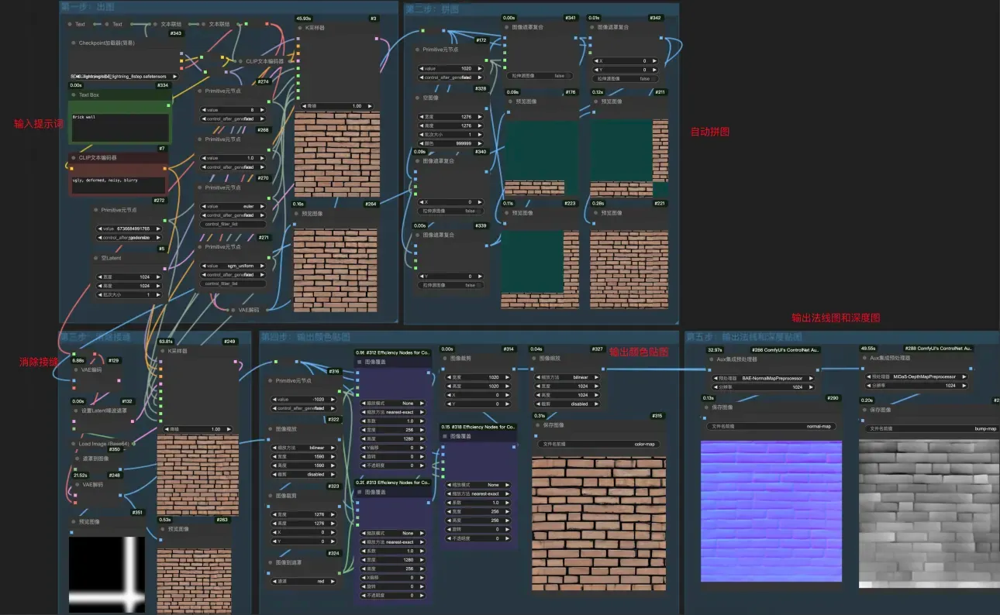
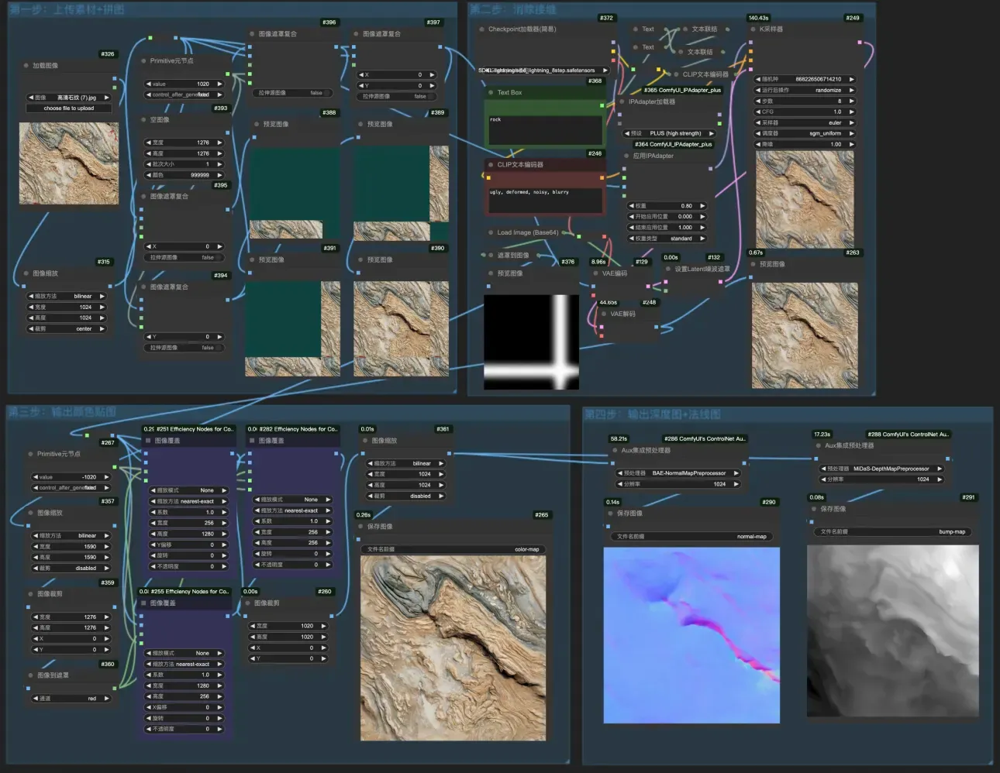

工作流使用教程
一、ComfyUI-无缝贴图一键生成
此工作流可以与AI“无缝贴图素材修复”工作流配合使用（第二部分介绍），它可以一键生成无缝贴图，只需输入想要的材质描述（英文），工作流即可生成无缝贴图，生成过程中AI自动拼接并修复缝隙。也可生成法线图和深度图，用于3D模型贴图创作（工作流和模型点击右侧按钮下载）。注意事项：
- 1.模型默认使用lightning 8步大模型，可以自行修改（也可以是flux或其他大模型），模型修改后记得修改相应的采样和步数；
- 2.新版本更新了对法线、深度图、曲率图的支持，修复了之前生成法线图不是无缝的bug（通过插件实现），需要用到的插件4个：external tooling、效率节点、CR节点、mtb插件（插件需要安装模型，下载地址见右侧）；

二、ComfyUI-无缝贴图素材修复
此工作流可以与AI“无缝贴图一键生成”工作流（第一部分介绍）配合使用。它可以一键把网上随便下载的素材修复成无缝贴图，只需上传你现有的素材（尺寸最好大点，比例无所谓，AI会自动裁剪），工作流即可进行无缝修复，关键词输入非必需。生成的过程中AI会模仿原图的风格，此处会用到IPadapter插件。也可生成法线图和深度图，用于3D模型贴图创作（工作流和模型点击右侧按钮下载）。注意事项：
- 1.模型默认使用lightning 8步大模型，可以自行修改（也可以是flux或其他大模型），模型修改后记得修改相应的采样和步数；
- 2.新版本更新了对法线、深度图、曲率图的支持，修复了之前生成法线图不是无缝的bug（通过插件实现），需要用到的插件4个：external tooling、效率节点、CR节点、IPadapter插件（需要下载对应模型）、 mtb插件（插件需要安装模型，下载地址见右侧）；
